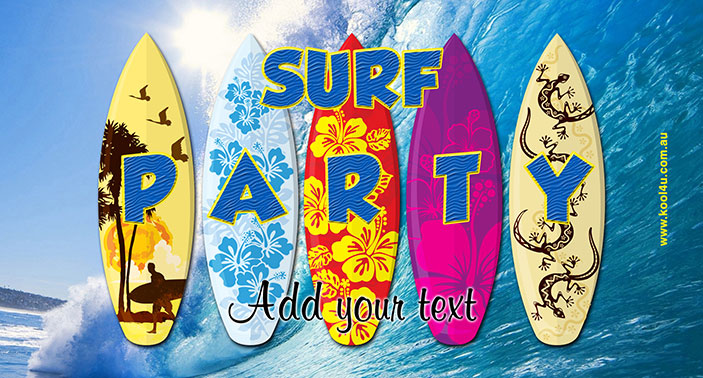

Surfing is a sport of riding a surfboard toward the shore on the crest of a wave there are various kinds of sports that i enjoy so much ,but there are some that i only hear of and there are those that i know but i wouldnt like to try them out.I am a sporty lady, i love to keep fit and enjoy the life of hanging out with my friends ,some of the sports that i know are
Actually most of these sports i have never experienced ,but i do know them,
and yes i would really like to try them out one day,
sporting is really healthy for one's life,just like water it keeps your body cool,
when one releases the sweat from their body their body gets cooled down
and hence more functionlity of the entire body
Sporting is also a stress releiver , anxiety releiver, and also enhances excitement on an individual.
I also think i get to interact with most people and different people from all over and this helps me
to be more social which is a positive feedback
.I am more happy when i am sporting,some of the sports that make me happy even though i hadnt mentioned them,
are lacrosse, table tennis and football ,also rugby ,
One other thing i would really like to do is surfing , i enjoy wtching people do this,
i only see it on tv, if i would get someone who would take on a surfing vacation i would be more happy,
i think i would even live surfing.
I would go out with you , won't even think twice as long as you are taking me on a surfing vacation I would love you from the moon to the oceans,to the crust of the earth, My love for you would grow more and i don't know if i would ever give you up If you wanna win my heart just do thi one thing for me
With surfing i'll get to use most of my muscles even more than swimming The seawater will wash out all the junk from my nose while surfing, which although can be gross, is actually a beneficial thing overall. The weird thing about that is that given how much water gets into my nose, it can stay in my nasal cavity for a while after surfing. Don’t be surprised that later in the day when i bend over to tie my shoes or even pick up something, a waterfall of salt water comes flowing out your nose! I would really love to have such an experience i bet i am not the only one who would like to.